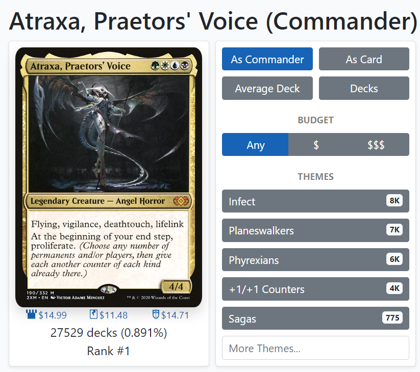
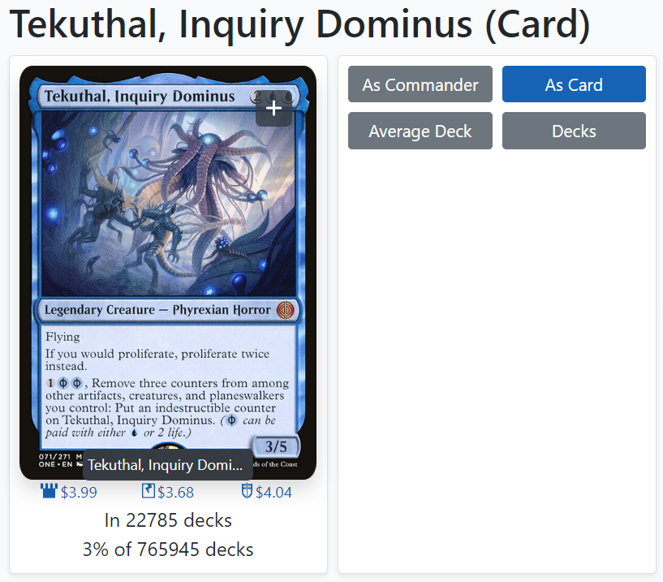
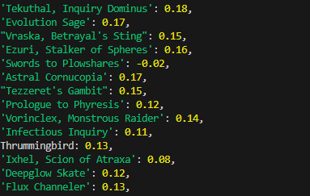
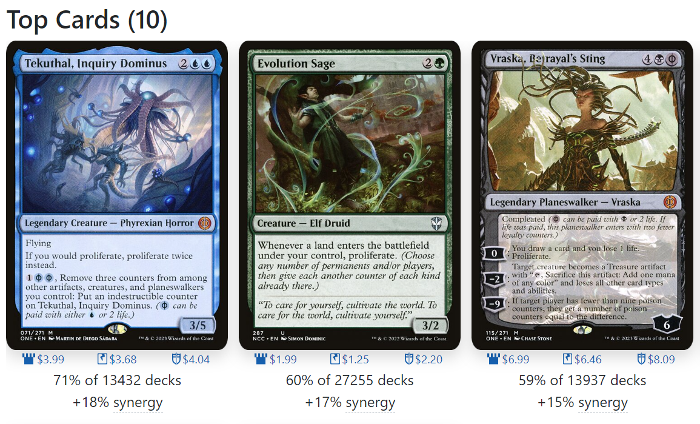
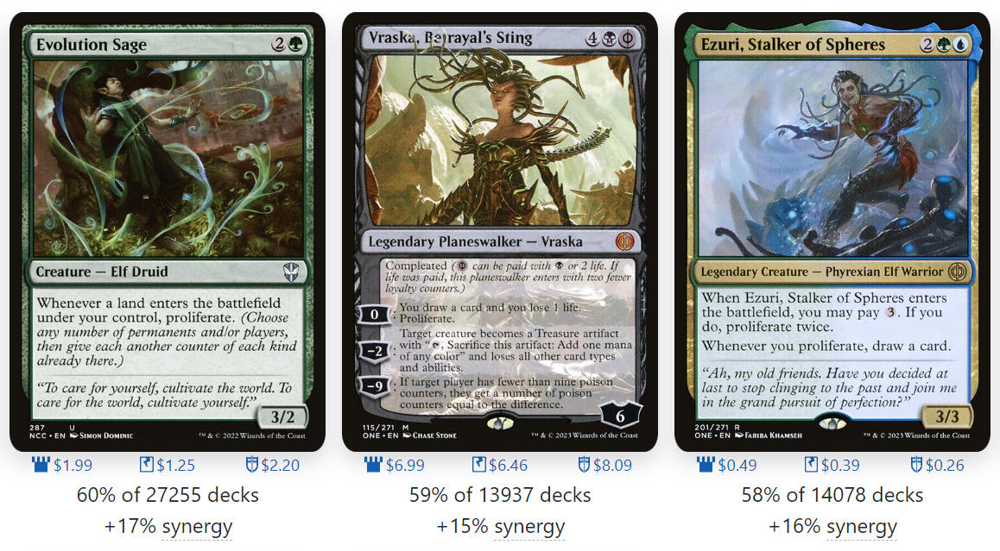
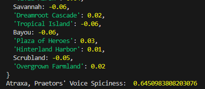

Project CAYENNE
Try CAYENNE
Resources
How it Works
Seed
to
Stem.

1. Above:
Usage information about the selected commander is ingested from EDHRec.

3. Above:
Information about how often each card in the decklist is seen generally is ingested.

5. Above:
Each card is assigned a spiciness value based on its collective usage information generally, with the specified commander, and with the other cards in the decklist.
2. Below:
Information about how often cards from the decklist are seen with that commander is ingested, along with their synergy information (how much more often the card is seen with that commander than it is seen generally).

4. Below:
Information about how often each card is seen with each other card in the decklist is ingested, along with the synergy information.

6. Below:
Using each card's spiciness value, alongside our secret family easing functions, a collective spiciness level is assigned to the decklist.
